DOORI アプリは、スマートフォンから自動ドアコントローラー（MCU）に直接接続し、ドアの開閉と状態確認を行うアプリです。
| 区分 | 対応範囲 |
|---|---|
| Android | Android 5.1 以上（2015 年以降のほとんどの機種） |
| iPhone | iOS 13 以上 — iPhone 6s · SE（第 1 世代）以降の最新機種まで |
| iPad | 非対応（iPhone 専用アプリ） |
| 共通 | 自動ドアコントローラーと同じ WiFi に接続できる端末 |
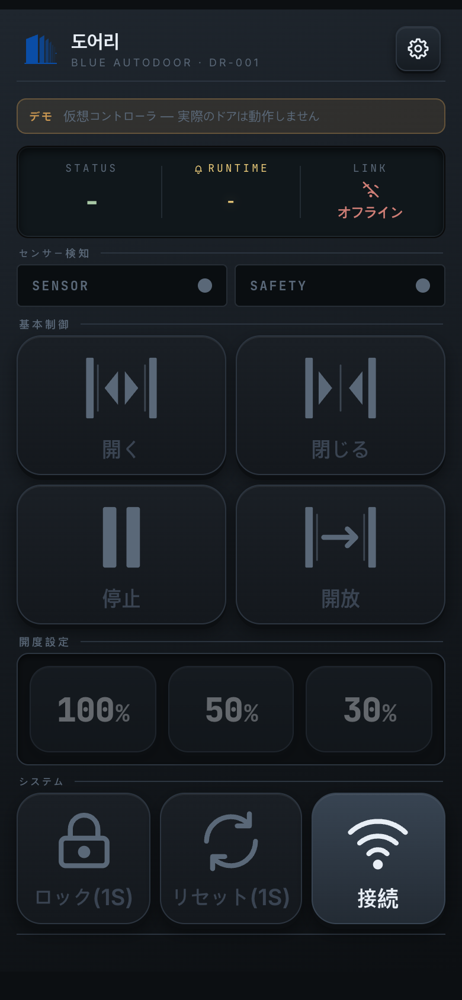
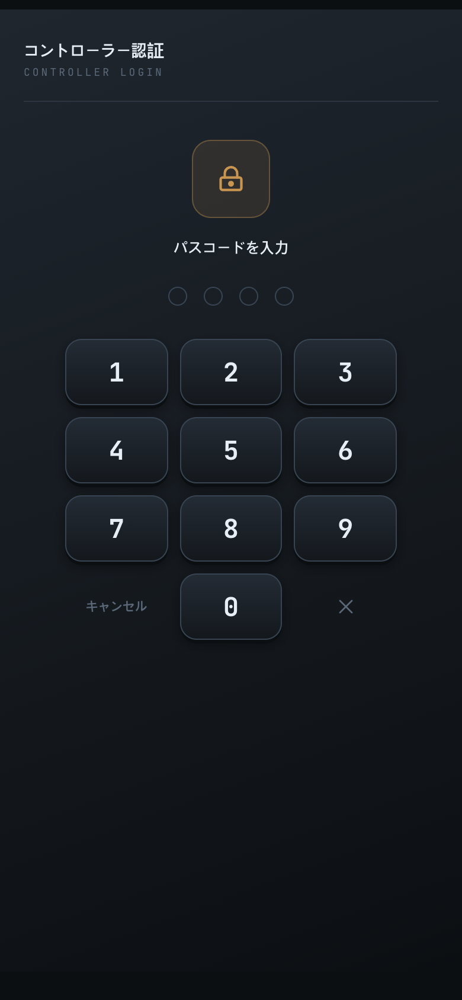
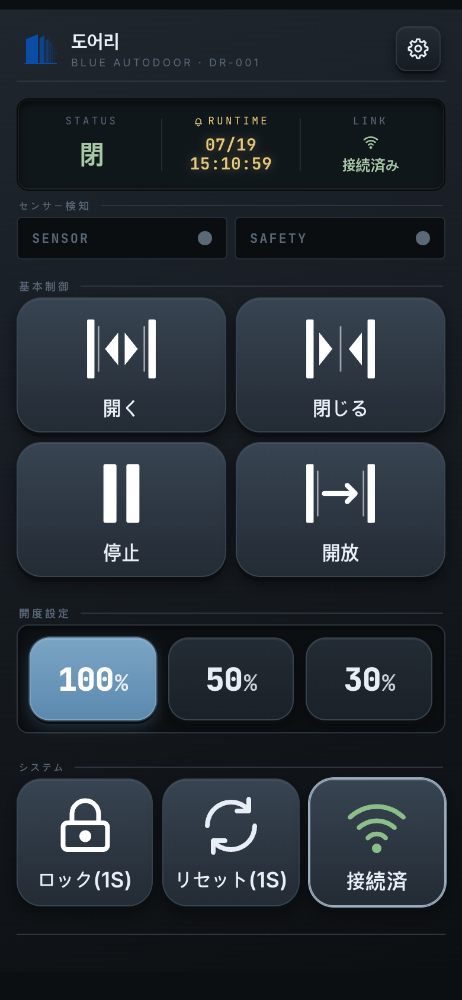
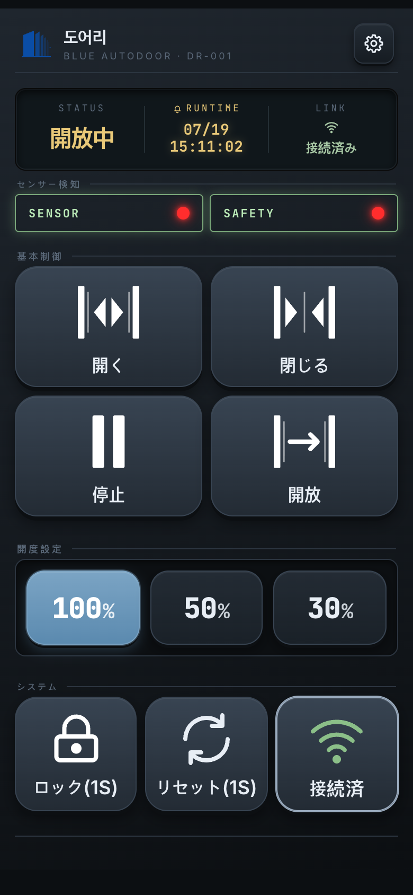
ホーム画面はテーマによって見た目が変わりますが、構成と動作は同じです。上から順に以下の領域があります。
左側はアプリのアイコンと名称、右側の設定ボタンから設定メニューに入ります。
| 項目 | 意味 |
|---|---|
| STATUS | 現在の状態 — 開放中 / 閉鎖中 / 開 / 閉 / 停止 / エラー / 開放（全開保持）/ ロック。表示する状態がない場合は - |
| RUNTIME | 最後に動作が発生した時刻（月/日 · 時:分:秒）。動作記録がない場合は - |
| LINK | コントローラーの接続状態 — 接続済み（緑）/ 接続中…（アンバー）/ オフライン（赤） |
STATUS の色分け — 進行中（開放中/閉鎖中）と停止は黄色、エラーとロックは赤色、それ以外（開/閉/開放）は緑色です。
検知している間はチップが赤く点滅します。瞬間的な検知も見逃さないよう、点滅は最低約 1 秒間保持されます。
接続済みかつロックされていない場合のみ有効になります。
| ボタン | 動作 |
|---|---|
| 開く | 設定された開度までドアを開きます。 |
| 閉じる | ドアを閉じます。 |
| 停止 | 動作中のドアをその場で停止します。 |
| 開放 | 全開にした後、その状態を保持します。 |
ドアをどこまで開くかの開度をあらかじめ選びます（プリセット 3 つ）。プリセットを押すと開度だけが送られ、 ドアはすぐには動きません — その後開くボタンを押すと、この開度で動作します。
| ボタン | 動作 |
|---|---|
| ロック / 解除 | 誤タッチ防止のため長押し（既定 1 秒）で動作します（ボタンには ロック(1S) のように表示）。
ドアをロックすると制御ボタンが無効になります。 |
| リセット | 長押し（既定 1 秒）でコントローラーにリセットコマンドを送ります。短く押しても動作しません。 |
| 接続 | 接続のオン・オフを切り替えます。緑色の接続済みが正常な状態です。 |
出荷時の設定ではアプリが WiFi を自動的に掴むことはありません。スマートフォンの設定 ▸ WiFi から自動ドア WiFi
（名称は WizFi360_… のように表示されます）に接続してから、アプリのホームで接続を押してください。
自動ドア WiFi でない状態で接続を押すと案内画面が表示されます — スマートフォンの WiFi を切り替えて再試行を押してください。
設定 ▸ ネットワークで「WiFi自動検索」をオンにし、自動ドアの正確な WiFi 名（例：
WizFi360_123456 — スマートフォンの WiFi 一覧で確認）を入力しておくと、接続案内画面に
「(WiFi名) に接続」ボタンが表示されます。スマートフォンの WiFi 設定に移動しなくても、アプリから直接接続できます。
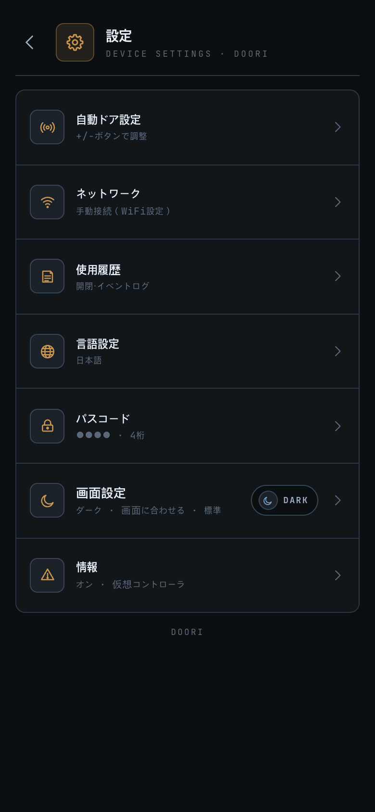
| 項目 | 説明 |
|---|---|
| 自動ドア設定 | 15 個の動作パラメーターを調整 → 7 章 |
| ネットワーク | コントローラー WiFi（自動検索）→ 6 章 |
| 使用履歴 | 開閉・イベントログ → 10 章 |
| 言語設定 | 한국어/English/中文/日本語 → 9 章 |
| パスコード | 4 桁のパスコード変更 → 8 章 |
| 画面設定 | テーマ · 文字サイズ · ボタンサイズ → 9 章 |
| 情報 | 型番・ファームウェア・シリアルなどの機器情報 |
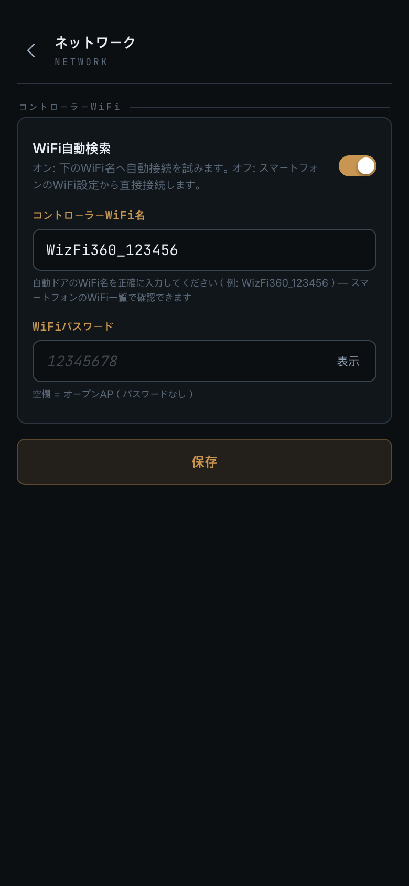
WizFi360_123456）。
機器ごとに末尾が異なるため、スマートフォンの WiFi 一覧で確認してそのまま入力してください。WiFi 情報は保存されるだけで、現在の接続には影響しません（次回の接続から適用）。周囲に自動ドアが複数あっても、 正確な名称を指定するため入力したその 1 台にのみ接続します。
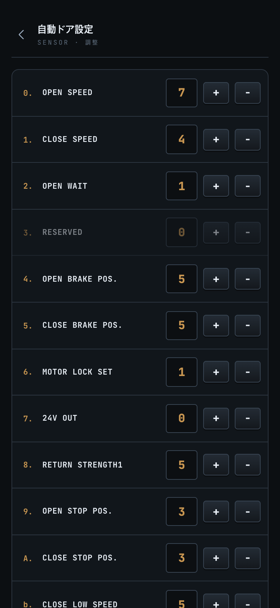
画面に入るとコントローラーの現在の設定 15 個を自動的に読み込みます。各項目は +/− ボタンで調整します。
| # | 項目 | 意味 | 範囲 |
|---|---|---|---|
| 0 | OPEN SPEED | 開放速度 | 0~9 |
| 1 | CLOSE SPEED | 閉鎖速度 | 0~9 |
| 2 | OPEN WAIT | 開放待機時間 | 0~9 |
| 3 | RESERVED | 予約（未使用） | — |
| 4 | OPEN BRAKE POS. | 開放ブレーキ位置 | 0~9 |
| 5 | CLOSE BRAKE POS. | 閉鎖ブレーキ位置 | 0~9 |
| 6 | MOTOR LOCK SET | モーターロック | 0~9 |
| 7 | 24V OUT | 24V 出力 | 0~1 |
| 8 | RETURN STRENGTH1 | 復帰力 1 | 0~9 |
| 9 | OPEN STOP POS. | 開放終了位置 | 0~9 |
| A | CLOSE STOP POS. | 閉鎖終了位置 | 0~9 |
| b | CLOSE LOW SPEED | 低速閉鎖 | 0~9 |
| c | RETURN STRENGTH2 | 復帰力 2 | 0~9 |
| d | SETTING STRENGTH | 設定力 | 0~9 |
| E | ONE_TOUCH SET | ワンタッチ | 0~1 |
下部のボタン — 読取：現在の値を再取得します · 保存：15 個の値をコントローラーに書き込みます （コントローラーの成功応答を確認して完了）· 既定値：画面の値を工場出荷時の既定値に戻します（保存するまでコントローラーには反映されません）。
まだ値を読み取れていない項目は — と表示され、調整・保存ができません — 先に読取を実行してください。
保存後に応答がない場合は「保存応答なし」のダイアログが表示され、再要求できます。
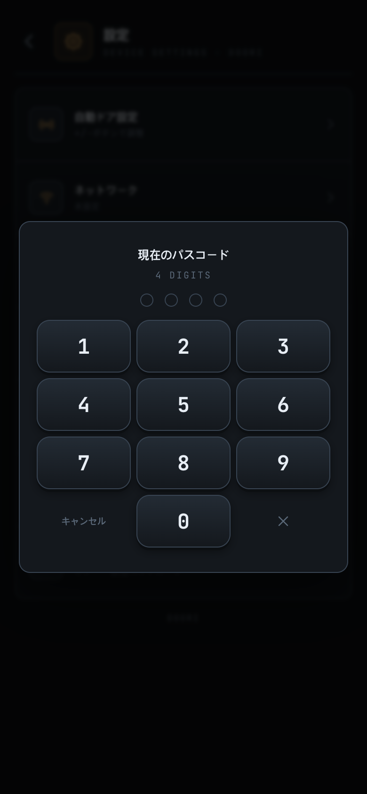
変更手順（4 桁の数字）：① 現在のパスコードを入力（コントローラーが検証）→ ② 新しいパスコードを入力 → ③ パスコード確認で再入力。
変更が確定すると「パスコードを変更しました」という通知とともにホームに戻り、コントローラーが一時的に再起動するため 円形のカウントダウンタイマーが表示されます。ほとんどの場合、数秒以内に自動的に再接続されます （新しいパスコードで自動認証されるため、再入力は不要です）。
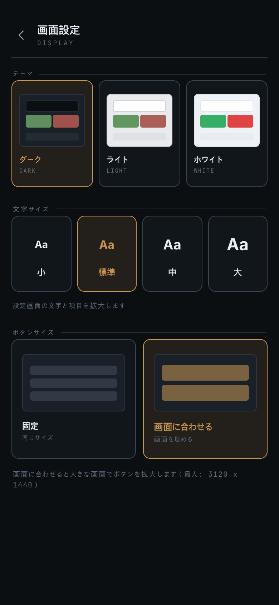
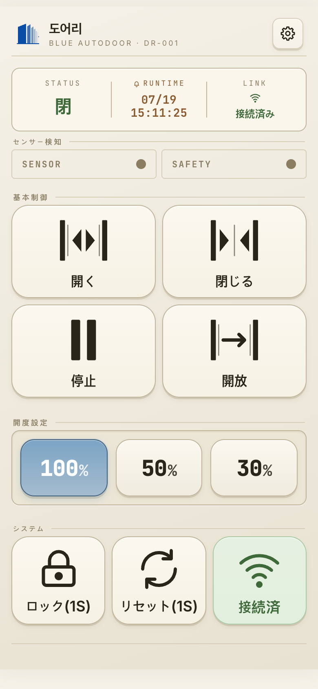
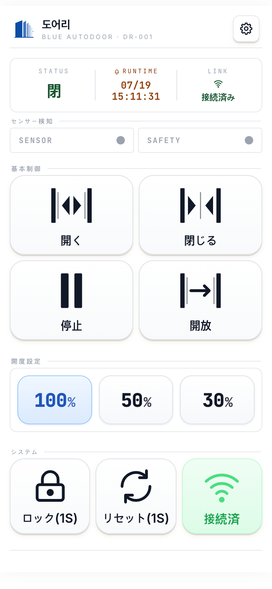
設定 → 言語設定 → 한국어 / English / 中文 / 日本語 から選択します。選択すると即座に画面全体に反映されます。 インストール直後はスマートフォン（システム）の言語に従い、対応していない言語の場合は英語で表示されます。 一度選択すると、その選択が保持されます。
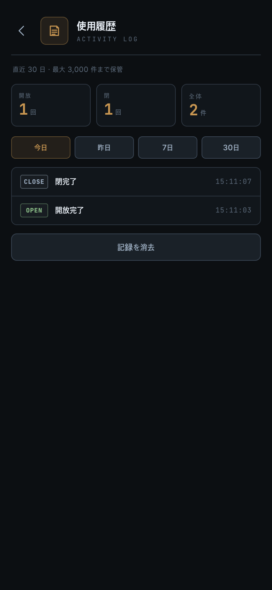
設定 → 使用履歴からドアの動作履歴を確認します。表示対象：開放/閉鎖完了 · 停止 · エラーなどのドア動作と、 ロック / 解除 / リセットの記録。
| 症状 | 確認事項 |
|---|---|
| 接続できない | スマートフォンとコントローラーが同じ WiFi かご確認のうえ再試行してください。 それでも改善しない場合は設置業者または当社へご連絡ください。 |
| iPhone でだけ接続できない | iOS のローカルネットワーク権限がオフになっている可能性があります。 設定アプリ ▸ DOORI ▸ ローカルネットワークをオンにしてから再接続してください。 |
| 頻繁に切断される | WiFi の電波強度とコントローラーとの距離をご確認ください。 電波が良好でも続く場合はお問い合わせください。 |
| 制御ボタンが無効（グレー） | 未接続、またはロック状態です。 |
| 自動ドア設定に入れない | コントローラーに接続されている必要があります。 |
設定値が — のままになる | まだ読み取っていません。読取を押してください。 |
| パスコードを変更できない | パスコードはコントローラーに保存されます — 接続された状態でのみ変更できます。 |
| モバイルデータで接続したい | 対応していません。自動ドアの WiFi（AP）に接続してからご使用ください。 |
| 自動ドア WiFi 接続ボタンが表示されない | アプリ内での自動接続は「WiFi自動検索」をオンにすると表示されます （設定 ▸ ネットワーク、Android 10 以上 · iPhone）。それ以外はスマートフォンの WiFi 設定から直接接続してください。 |
| DOORI 使用中にインターネットが使えない | 正常です — 接続中はスマートフォンの WiFi が インターネットのない自動ドア WiFi に切り替わります。アプリを終了するか接続を解除すると元の WiFi に戻ります。 |
| 自動接続で「WiFi が見つからない」と表示される | 設定 ▸ ネットワークのコントローラー WiFi 名が 実際の名称と完全に一致しているか（スマートフォンの WiFi 一覧で確認）、WiFi パスワードが正しいかをご確認ください。 |
| 席を外して戻ったら接続されていない | 正常です。下の 「接続が自動的に戻らないとき」を参考に、ホームの接続ボタンを押してください。 |
| 他の WiFi を使った後に戻ると接続できない | スマートフォンを自動ドア WiFi に戻してから ホームの接続を押してください。 |
DOORI は自動ドア WiFi の中でのみ動作します。そのためスマートフォンがその WiFi から離れると、アプリは
バッテリーを節約するために自動再接続を一時的に停止します。故障ではなく、決められた動作です。
このとき LINK 欄はオフラインと表示され、制御ボタンはグレーになりロックされます。
| 状況 | アプリの動作 |
|---|---|
| ドアから離れて自動ドア WiFi の圏外になった | 数回試したあと静かに停止します |
| モバイルデータ（LTE·5G）に切り替わった | 同様に停止します（データ通信では自動ドアに到達できません） |
| 他の WiFi（自宅・オフィスなど）に移った | もう少し試したあと停止します |
| 自動ドア WiFi に戻ってきた | 自動的に再接続します |
| 電波が弱く一時的に切断された | 自動的に数回再接続を試みます |
解決方法 — 2 ステップで済みます。
接続 ボタンを押してください。このボタンを押すとアプリが
最初からやり直して接続を試みます — 自動再接続が停止した後でも必ず動作する、最も確実な方法です。接続 ボタンを一度押してください。
アプリが自力で再接続するのを待つよりずっと早く復帰します。接続 ボタンを押す必要があります。